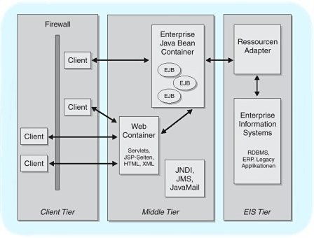

|
1. Der Gegenstand dieses Projektes
Die Idee des database-Projektes bestand darin, beispielhaft den JBoss 3 als J2EE-Plattform zu verwenden, d.h. als Datenbank- und Applikationsserver einer Internet-Anwendung.
Der JBoss ist seit mehreren Jahren auf dem Mark und befindet sich im Moment in der Version 3.x. Diese Version des JBoss implementiert die J2EE v 1.3 Spezifikation, so dass er damit seiner kommerziellen Konkurrenz zum Teil weit voraus ist. Das aktuelle Release dieses Open Source-Projektes kann kostenlos unter www.jboss.org heruntergeladen werden. Die Distribution ist in zwei Varianten erhältlich. JBoss kann sowohl mit der Servlet Engine der Apache Software Fundation (ASF), dem Tomcat zusammenarbeiten, als auch mit der ab Version 3 erhältlichen JBoss eigenen Servlet Engine JBossWeb. Da diese Engine jedoch noch recht neu ist, wurde auf ein Beta Test verzichtet und es wurde die Version mit integrierten Tomcat 4.1.12 verwendet.
Hintergrund - die J2EE-Plattform
Der Kern des J2EE-Modells besteht darin, einfach anpassbare und leicht zu administrierende Komponenten unabhängig von Systemdiensten wie Transaktionsverwaltung, Persistenz oder Autorisierung zu entwickeln, die plattformübergreifend eingesetzt und an existierende Informationssysteme angekoppelt werden können. Die Konfiguration und Anpassung der Komponenten basiert auf Beschreibungen in Form von XML-Dokumenten (Deployment-Deskriptoren). Das J2EE-Modell ist Web-basiert, d.h. es wird die Annahme gemacht, dass Clients die Middleware in der Regel über HTTP ansprechen und dabei die Auszeichnungssprachen HTML und XML verwenden, allerdings ist der Zugriff über RMI, IIOP und SOAP ebenfalls vorgesehen. Das J2EE-Programmiermodell definiert die Rolle einer Middleware wie folgt: The principle role of the middle tier is therefore one of integrating the Web computing tier and the distributed computing tier, such that EIS resources are accessible efficiently, securely, and with a rich abstraction model.

Die J2EE-Technologie kann als konsequente Weiterentwicklung dreier erfolgreicher Java-APIs angesehen werden: JDBC, Servlets und Enterprise Java Beans. Die wichtigsten Konzepte der J2EE-Plattform sind Komponenten und Container. Eine Komponente ist eine abgeschlossene Einheit des Anwendungsprogramms. Die Laufzeitumgebung für J2EE-Komponenten wird durch Container umgesetzt. Sie stellen eine einheitliche Sicht auf die von tiefer liegenden Schichten angebotenen Dienste zur Verfügung. Eine Komponente kann unabhängig von der verwendeten J2EE-Plattform die gleichen Dienste erwarten. Hierzu zählt beispielsweise ein Namensdienst (JNDI) und ein Persistenzdienst (CMP bzw. BMP). Die Nahtstelle zwischen Komponenten und Containern wird durch Interfaces beschrieben. Komponenten müssen die darin vereinbarten Methoden implementieren. Der Lebenszyklus einer Komponente legt die Reihenfolge der Aufrufe dieser Methoden durch Container fest. Das J2EE-Programmiermodell definiert unter anderem zwei verschiedene Arten von Komponenten: Web-Komponenten und Enterprise-Java-Beans-Komponenten.
Servlets und JSP-Seiten sind die wichtigsten Beispiele für Web-Komponenten. Sie werden durch Web-Container ausgeführt. Obwohl mit beiden Arten von Komponenten die gleiche Funktionalität umgesetzt werden kann, werden sie trotzdem für unterschiedliche Zwecke eingesetzt. Servlets nehmen Anfragen entgegen und delegieren nach einer Analyse der Anfragedaten die Anfrage zur Bearbeitung an eine andere Komponente. Servlets haben in diesem Szenario eine Vermittlerrolle. JSP-Seiten sind ausschliefllich für die Präsentation der Anfrageergebnisse zuständig. Sie implementieren weder die Vermittlungs- noch die eigentliche Anwendungslogik. Im Allgemeinen erzeugen sie HTML-Dokumente, sie können aber auch XML-Dokumente erstellen, welche von anderen Anwendungen weiterverarbeitet werden.
EJB-Komponenten, d.h. Enterprise Java Beans, enthalten primär die eigentliche Anwendungslogik. EJB-Container bieten eine Transaktionsverwaltung und einen Persistenzdienst an. Wie auch für Web-Komponenten übernehmen Container die Verwaltung, Konfiguration und Ausführung von Enterprise Java Beans. Clients kommunizieren primär mit Containern. Sie nehmen Anfragen entgegen, leiten diese an die zugehörige Komponente weiter und schicken die generierte Antwort an den anfragenden Client zurück. Alle Container sind dafür verantwortlich, die in der Konfigurationsdatei enthaltenen Angaben umzusetzen, beispielsweise die Authentifizierung von Benutzern. Enterprise Java Beans bilden die Grundlage für die Verteilung von J2EE-Anwendungen, die Dienste von EJB-Containern verdecken dabei einen groflen Teil der Komplexität verteilter Systeme.
Das J2EE-Programmiermodell stützt sich auf eine Drei-Schichten-Architektur. Die Container sind dabei auf der mittleren Schicht angesiedelt. Die Ankopplung existierender Informationssysteme, in der J2EE-Terminologie Enterprise Information Systems (EIS) genannt, erfolgt mittels der Java Connector Architecture (JCA). Die Connector-Architecture verallgemeinert das Konzept der JDBC-Treiber zu Ressourcenadaptern. Das Zusammenspiel zwischen J2EE-Server, Ressourcenadapter und EIS wird durch so genannte Kontrakte festgelegt. Sie regeln die Zusammenarbeit bezüglich Transaktionen, Sicherheit und Connection-Pooling. Anwender können sich bei der Entwicklung auf die Geschäftslogik und Präsentationsaspekte konzentrieren und müssen sich nicht mit der Implementierungen dieser Systemdienste auseinander setzen.

Bei der reinen Drei-Schichten-Anwendungen enthalten Web-Komponenten fast ausschliefllich die Präsentationslogik. Anwender greifen über einen Web-Browser und HTTP auf die Anwendung zu. EJB-Komponenten empfangen Anfragen nur von Web-Komponenten und greifen zu deren Beantwortung auf die unterste Schicht zu. Dieses Szenario trennt die Anwendungslogik sehr scharf von der Präsentationslogik und erlaubt so eine relativ unabhängige Entwicklung der beiden Bereiche und genau dies ist auch in der database-Anwendung zu beobachten.